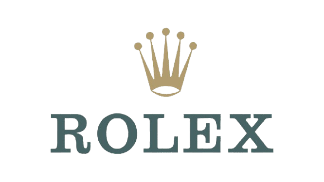

A maior marca de relógios
A maior marca de relógios
de luxo de todos os tempos.
Descubra a coleção mais recente da Rolex, onde a tradição encontra a modernidade. Uma marca que representa muito mais do que apenas um relógio.
Explore Agora